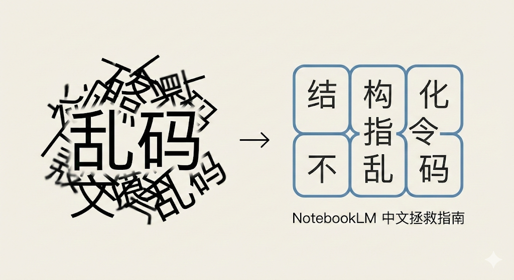

Hi ，我是米哥。
今天想跟你分享，如何解决NotebookLM 生成中文乱码的问题。

Chapter 1
为什么你的图总是乱码？
强制分区：逼着AI先画好框框。限制了像素的自由度，把字锁在容器里。 降低认知负荷：调动AI的逻辑推理能力来排列内容，而不是随机堆砌视觉纹理。
Chapter 2
送你四套“神级”防乱码指令模版
🧩场景一：竞品对比/SWOT分析
复制这段指令：
创建一个 2x2 的网格布局来进行 SWOT 分析。严格将四个象限标记为：1.优势，2.劣势，3.机会，4.威胁。使用干净的商务风格，每个象限使用不同的背景颜色以区分文本块。
Create a 2x2 grid layout to perform a SWOT analysis based on the source. Label the four quadrants strictly as: 1. Strengths, 2. Weaknesses, 3. Opportunities, 4. Threats. Use a clean, corporate style with distinct background colors for each quadrant to separate the text blocks.
💡 效果：你会得到一张标准的四象限图。
🔢场景二：新手教程/SOP流程
复制这段指令：
创建一个从 1 到 5 的垂直编号列表，列出源文档中的“关键步骤”。确保每个数字都大、粗且视觉清晰。使用高对比度配色（如黄黑），使文字清晰易读，具有教程指南的冲击力。
Create a vertical numbered list from 1 to 5 outlining the 'Key Steps' found in the source. Ensure each number is large, bold, and visually distinct. Use a high-contrast color scheme (like yellow and black) to make the text legible and impactful for a tutorial guide.
💡效果：就像一张精美的海报。
⏳场景三：项目规划/历史复盘
复制这段指令：
设计一个横向时间轴，跨越源文档中提到的项目工期。标记 4 个明显的里程碑，附带具体日期和简短描述。使用一条连续的线从左到右连接节点，采用极简科技美学。
Design a horizontal timeline spanning the project duration mentioned in the source. Mark 4 distinct milestones with specific dates and short descriptions. Use a continuous line connecting the nodes from left to right, employing a minimalist tech aesthetic.
💡效果：极简科技风的时间轴，节点清晰。
🏛️场景四：分级策略/方案报价
复制这段指令：
将布局分为 3 个清晰的垂直列。将列标题标记为：“初学者”、“中级”和“高级”。将源文档中针对每个级别的关键建议总结到相应的列中。使用中性背景的卡片式设计。
Split the layout into 3 distinct vertical columns. Label the headers of the columns as: 'Beginner', 'Intermediate', and 'Advanced'. Summarize the key advice for each level from the source into the corresponding column. Use a card-style design with a neutral background.
💡效果：三列卡片整齐排列。
Chapter 3
为什么我建议你一定要动手试试
用AI提高效率问题，
用沟通解决关系问题。
扫一扫，运气更好